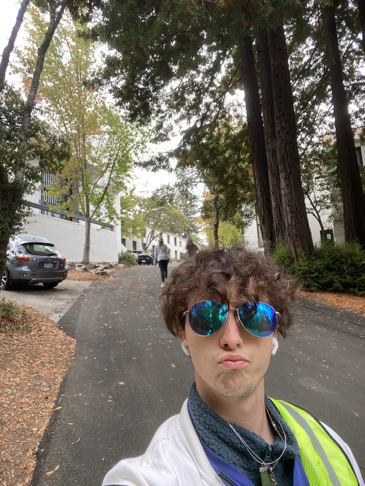

Vincent's Homepage

About Me
My name is Vincent and I am a third year AGPM Major. I play soccer competitively for the schools club team, and enjoy passing my time with music, video games and sleeping. I am also a big musichead and always looking to expand my playlists. I am a rather big movie and anime nerd as well so feel free to give me a test! My favorite Football team is FC Barcelona and some of my Idols include Lionel Messi, and Andres Iniesta. I grew up in both the United States and New Zealand. My younger childhood life was in Auckland, New Zealand and I spent the more recent half of my life growing up here in California.